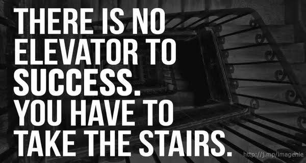
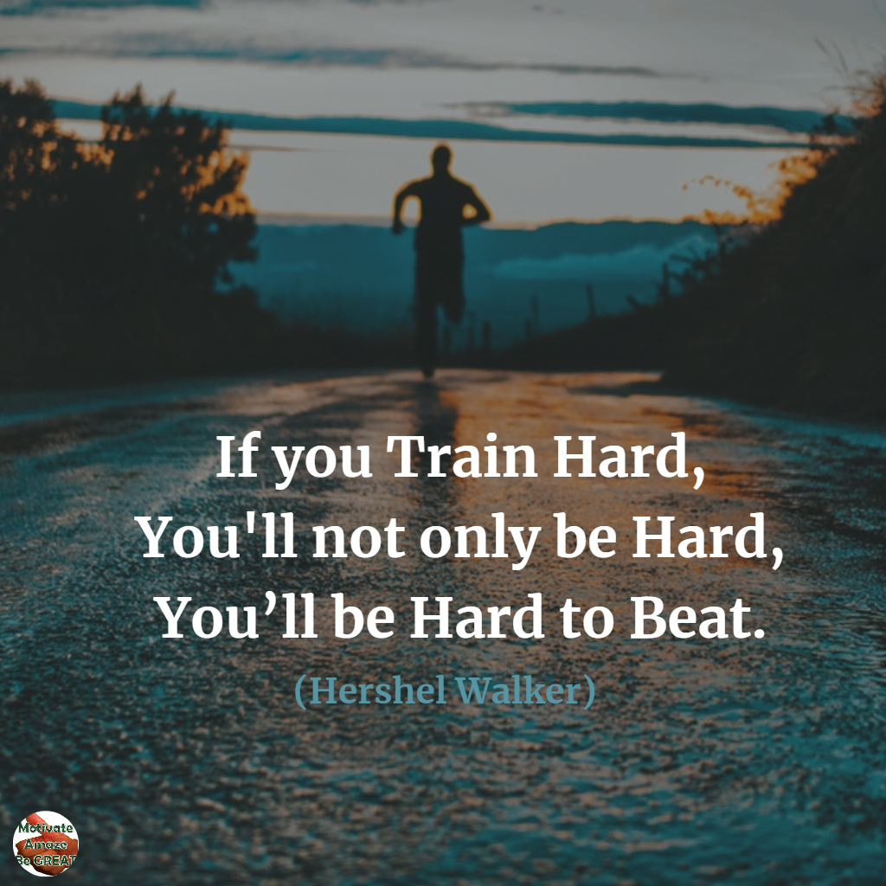

Hey guys so im back. I know two posts almost back to back... but I guess the mood guided me to do so. First and foremost, i dedicate this to my God, my parents and sis and any1 else who has always motivated me in my most darkest times but today ill narrow my post to schul life.
U know whichever stage we as students have been in our schul life, we have always thought schul was a jail and we learners the prisoners and the teachers our strictest jailers(apart from when we were in baby class and pre-unit when we loved schul and thought it was heaven to our eyes). The truth of the matter, is that we never see the truth until we exit from schul and miss those memories and cherish them as the apple of our eyes. I used to laugh at my sis after she finished f4 when she tells me she misses every small moment they had in high schul but ironically, a few years back when she was in high schul she was always stressed and in one way or another didn't like { or should i say disgusted} the performance pressure she always felt.
That's why I guess she keeps on motivating me to never loose hope when i falter in an exam. And for me i feel the performance pressure even more cauz my sis was one of the avengers crew that left a legacy of good performance in schul🤣😆. Well that's why i wanna shout out to all my fellow students that feel this pressure too, relax guys "The phoenix must burn to emerge".
I find schul like a maze- u know there are several ways that lead to any point, and it all depends on the person on which route to use. The routes of the maze are the roads of efforts and struggles we face in our schul, the starting point in the maze is the first step we will take in trying to reach our dreams in this case our marks and careers, and the end point of the maze is the point we exit schul with the grades we once admired to have. Don't get me wrong... i know all students are not A students but every student has their ultimate score of their choice. but do remember in the maze there r the minor routes that lead to a dead end... these are the wrong decisions we as students make eg. wrong choice of friends " bad company ruins good morals", ignoring our teachers and parents advice etc.
But trust me guys if u are determined, u will achieve ur goals all u need to do is just remain focused. I know the line above is easier said than done, but anything sweet doesn't come easy.I remember a dialogue from a kihindi movie that said, if u really want something with ur whole heart truly, and deeply want it from the bottom of ur heart, the whole world will engage in a conspiracy so as to make u achieve ur dreams. OK that sounded cliche and philosophical😂😒😁 but tbh i saw this live eg. from my sis.... i saw how badly she wanted her A, i saw her restlessness, I've felt her breakdown, i felt her anxiety, i dealt with her sudden moods and emotional breakdowns, I've sat up whole nights to console her when she got nightmares and guess what! she got it.
So never give up... kudos to all those that are already hardworking and to those struggling like me, " anything that doesn't kill u makes u stronger."
If you find the post interesting read the next post.
Finding Real Diamond